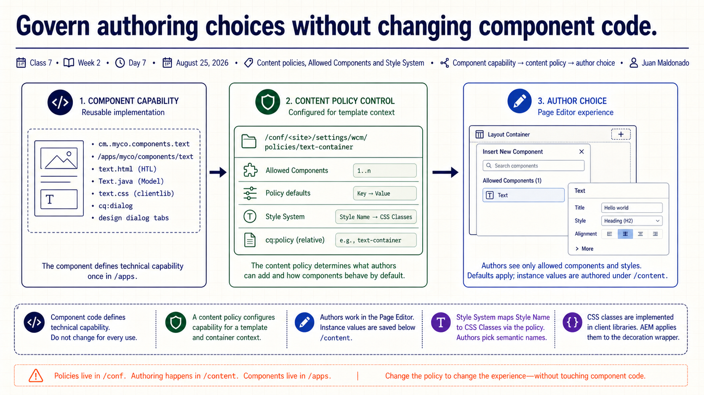
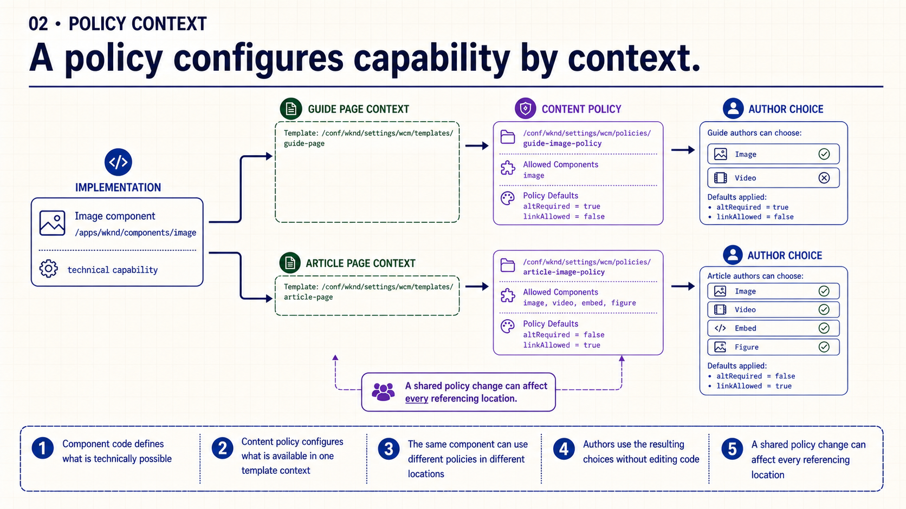
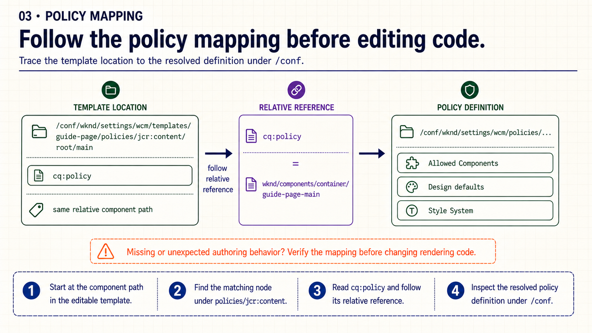
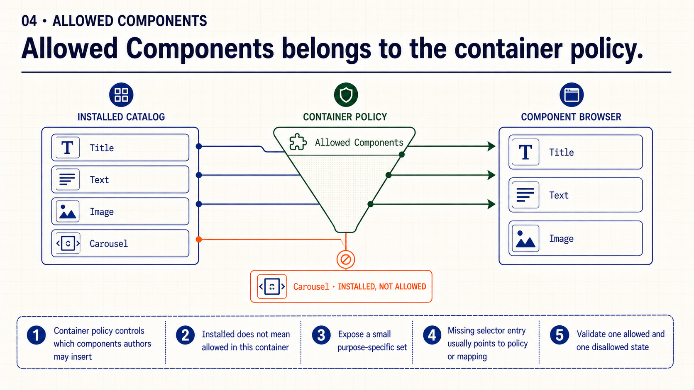
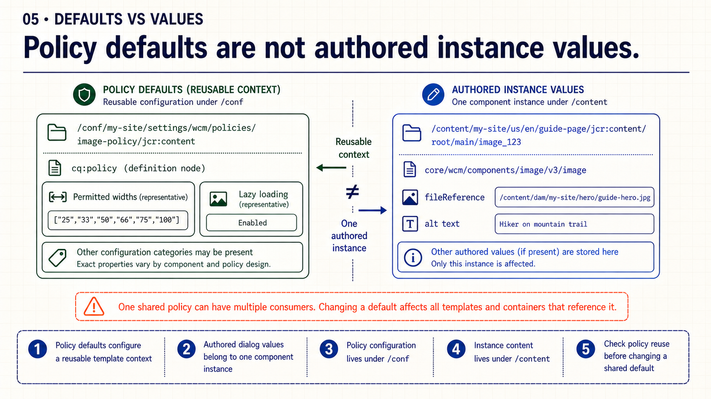
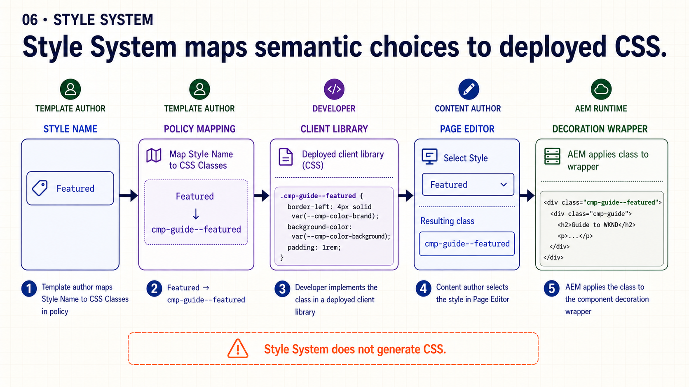
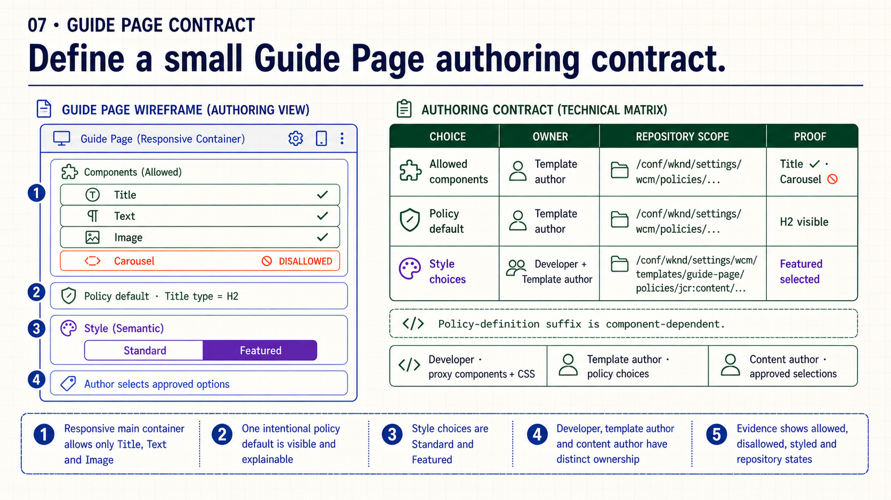
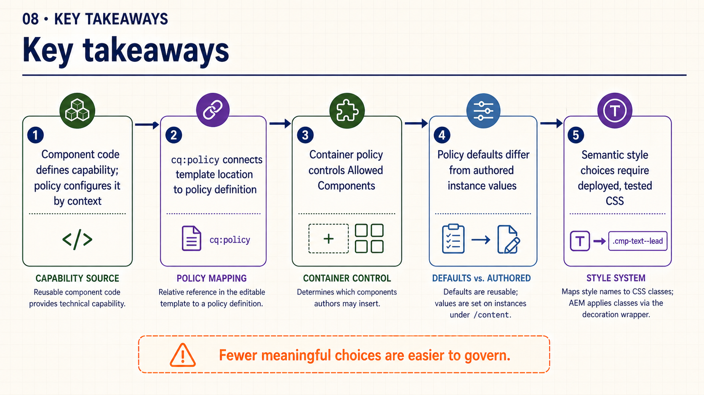
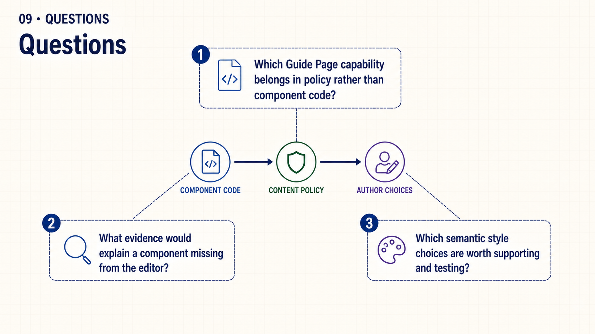

{kind=link}
Open: “Which choices should authors receive without changing component code?”
Class 7 · Week 2 · Day 7 · August 25, 2026
Trace policy resolution, control Allowed Components and connect semantic author choices to deployed CSS.
cq:policy mapping and show one semantic style backed by deployed CSS./conf; the supplied diagram is sufficient.cq:policy to its policy definition;| Time | Activity | Facilitation |
|---|---|---|
| 0–3 | Retrieval | Ask: “A component is installed but unavailable in the editor. What should you inspect first?” |
| 3–19 | Slides 1–6 | Build the policy-context, mapping, Allowed Components, defaults and Style System models. |
| 19–25 | Slide 7 | Define the small Guide Page authoring contract and its observable evidence. |
| 25–27 | Slide 8 | Retrieve the five policy distinctions. |
| 27–30 | Slide 9 | Questions only; no live demonstration dependency. |
Choose Copy slide as image and paste it into PowerPoint, or download the PNG.

Open: “Which choices should authors receive without changing component code?”

Contrast: implementation capability is reusable; policy configuration is contextual.

Inspect first: verify the template path, cq:policy value and resolved definition.

Validate both states: one intended component is available and one unrelated component is not.

Scope: one instance value is local; a reused policy default can affect many consumers.

Trace: Style Name → policy mapping → client library → author choice → wrapper class.

Evidence: show allowed, disallowed, styled and repository states.

Retrieve: ask which control point explains one authoring behavior.

Close: discuss the smallest reliable Guide Page authoring contract.
The complete talk track is available in speech.md.
cq:policy.Practice bridge: continue Week 2 · Create the Guide Page authoring contract and include the policy evidence in the final review.
{kind=link}
{kind=link}
{kind=link}
{kind=link}
{kind=link}
{kind=link}
{kind=link}
{kind=link}